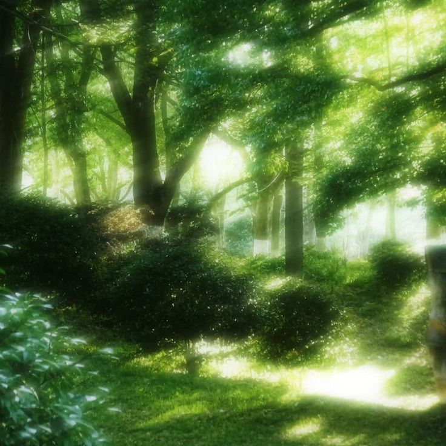
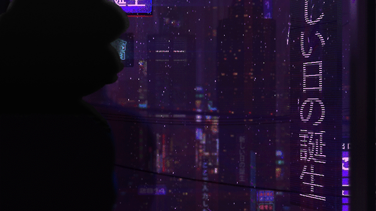

"Backward Stories" es un proyecto que tiene sus bases hace un año aproximadamente durante las clases en mi colegio, llamado Cardenas Centro, ubicado en Palmira, Valle del Cauca...
Junto a una amiga que por privacidad no diré su nombre, quien me animó a realizar esta linda actividad creativa que es crear personajes e historias, que a veces son muy allegadas a la realidad y otras veces a la ficción, pero nunca dejando de compartir su posibilidad en nuestro mundo real...
Sin más que decir sean bienvenidos a esta página que contiene las historias e información, pronto una colaboración

Aquí encontraremos diferentes personajes y diferentes esteticas, nos va a caracterizar los estilos variados, el multiverso y las diferentes lineas temporales que se pueden presentar en diferentes universos...
